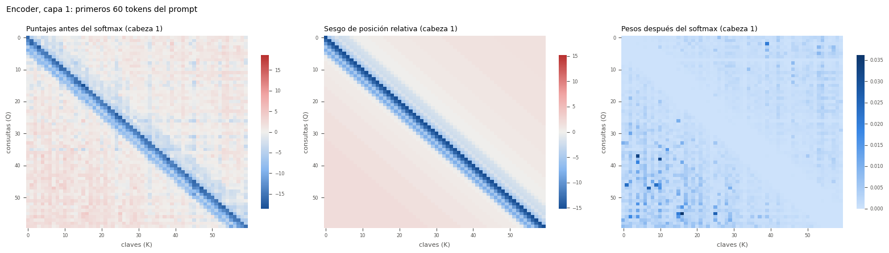
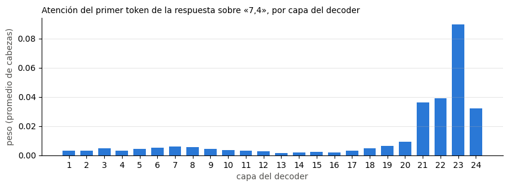

Procesamiento de Datos Secuenciales · Trabajo final
Un Transformer encoder-decoder aplicado a historias clínicas en español, sin entrenarlo
Grupo 11 · Joan Sebastian Mena Ortega · Jensen Tamayo Merchan
Noviembre de 2026
Contexto
Extraer 10 variables de una historia clínica con Aya-101, sin entrenarlo, y mostrar cómo entra la información, qué pasa en la atención y qué sale.
Artículo base
Üstün et al., «Aya Model: An Instruction Finetuned Open-Access Multilingual Language Model», ACL 2024, mejor artículo de la conferencia.
Arquitectura
Mecanismo de atención
Transformer original
Atención(Q, K, V) = softmax(QKᵀ / √dk) · V
En T5, y por lo tanto en Aya-101
Atención(Q, K, V) = softmax(QKᵀ + B) · V
| Atención | Q sale de | K y V salen de |
|---|---|---|
| Self-attention del encoder | el prompt | el mismo prompt |
| Self-attention del decoder | los tokens ya escritos | los mismos tokens, con máscara |
| Atención cruzada | el decoder | la salida del encoder |
La atención cruzada conecta lo que el decoder va escribiendo con la historia que leyó el encoder. Es la que muestra la app en su sección 4.
Multicabeza: la misma cuenta se repite en 64 cabezas con proyecciones distintas y los resultados se unen.
Tensores Q, K y V · caso 1, prompt de 250 tokens

Cabeza 1, «▁Lee» mirando a «▁la»: Q·K = −0,259 · sesgo = −5,000 · puntaje = −5,259. En esta cabeza el sesgo de posición pesa más que el contenido.
Entrada y salida
Prompt de una variable (el de la HbA1c del caso 1):
La app muestra el prompt completo, la tabla con el valor esperado, la atención cruzada y los tensores Q, K y V.
Diagrama interactivo con los 14 pasos: diagrama_inferencia.html
Lee la historia clínica y responde la pregunta. Responde solo con el número, sin unidades. Si el dato no aparece, responde: No registrado. Historia clínica: HISTORIA CLÍNICA SINTÉTICA. DATOS FICTICIOS. … Paraclínicos: creatinina sérica 1,15 mg/dL, HbA1c 7,4 %. … Pregunta: ¿Cuál es el valor de hemoglobina glicosilada (HbA1c) en %? Respuesta:
Innovaciones
Implementación
Demostración
Evaluación
15 historias sintéticas × 10 variables = 150 casillas por configuración, cada una con sus valores esperados. Ponen a prueba negaciones, abreviaturas, talla en centímetros, datos ausentes y números que distraen.
Precisión: de los valores que entrega el modelo, cuántos son correctos. Recall: de los datos que tiene la historia, cuántos recupera. F1: la media armónica de los dos.
Intervalos del 95 %: Wilson para la exactitud y bootstrap por historias para el F1.
| Clase | Qué pasó |
|---|---|
| correcto | coincide con el esperado |
| valor distinto | dio un valor equivocado |
| omitido | la historia lo tiene y no lo dio |
| inventado | dio un valor que la historia no tiene |
Los ajustes de la corrida 2 se eligieron mirando estas mismas historias: sus cifras son optimistas.
Resultados
| Corrida | Configuración | Exactitud | F1 (IC 95 %) | Segundos por historia |
|---|---|---|---|---|
| 1 | Una pregunta por variable (20 tokens) | 0,693 | 0,766 (0,706 a 0,818) | 25,2 |
| 2 | Por variable · 40 tokens | 0,760 | 0,812 (0,762 a 0,856) | 24,5 |
| 2 | Por variable · 40 tokens · prompt Sí/No | 0,760 | 0,806 (0,749 a 0,856) | 25,3 |
| 1 | Un solo prompt con JSON | 0,540 | 0,684 (0,463 a 0,846) | 15,0 |
| 2 | JSON · sin ciclos | 0,540 | 0,684 (0,463 a 0,846) | 11,3 |
40 tokens: las 10 respuestas de HbA1c ya no se cortan. Toda la mejora del F1 sale de ahí.
Prompt Sí/No: cambió 2 casillas, y las dos empeoraron.
JSON sin ciclos: ningún valor cambia; solo baja el tiempo. Nunca hubo un JSON válido (0 de 15).
Análisis por variable
| Variable | Por variable | JSON |
|---|---|---|
| PA sistólica | 15 / 15 | 9 / 15 |
| Peso | 15 / 15 | 10 / 15 |
| Creatinina | 15 / 15 | 9 / 15 |
| HbA1c | 15 / 15 | 7 / 15 |
| Talla | 14 / 15 | 10 / 15 |
| Hipertensión | 12 / 15 | 9 / 15 |
| IECA o ARA-II | 10 / 15 | 7 / 15 |
| Diabetes | 7 / 15 | 9 / 15 |
| PA diastólica | 6 / 15 | 2 / 15 |
| Enfermedad renal | 5 / 15 | 9 / 15 |
Nunca responde «No» preguntando por variable: 0 de 26. Ante «Niega diabetes» o «Sin enfermedad renal» dice «No registrado» (22) o «Sí» (4).
Diastólica: en 6 historias pone la sistólica y en 3 copia la presión completa («128/78»).
JSON: en 9 historias acierta 79 de 90 (por variable, 69 de 90 en esas mismas); en las otras 6 no escribe ninguna clave.
Errores de sentido: losartán suspendido, amlodipino tomado por IECA o ARA-II, irbesartán no reconocido como ARA-II.
Atención cruzada · caso 1, pregunta de HbA1c

En la capa 23, «▁7,4» es el token más atendido de todo el prompt (0,090), por encima de «▁masculin» (0,058). En las capas 1 a 20 el peso es muy bajo.
Primer token que elige lm_head: «▁El» 0,553 · «▁7,4» 0,181 · «▁7.4» 0,071 · «▁No» 0,062.
Con greedy gana «El» y la respuesta repite la pregunta; con 20 tokens se cortaba antes del número.
Limitaciones
Conclusiones
Código, notebooks ejecutados, métricas y bitácora en el repositorio de GitHub del grupo.
[1] A. Üstün et al., "Aya model: An instruction finetuned open-access multilingual language model," in Proc. ACL, 2024, pp. 15894–15939.
[2] L. Xue et al., "mT5: A massively multilingual pre-trained text-to-text transformer," in Proc. NAACL-HLT, 2021, pp. 483–498.
[3] C. Raffel et al., "Exploring the limits of transfer learning with a unified text-to-text transformer," JMLR, vol. 21, no. 140, pp. 1–67, 2020.
[4] A. Vaswani et al., "Attention is all you need," in Advances in Neural Information Processing Systems 30, 2017.